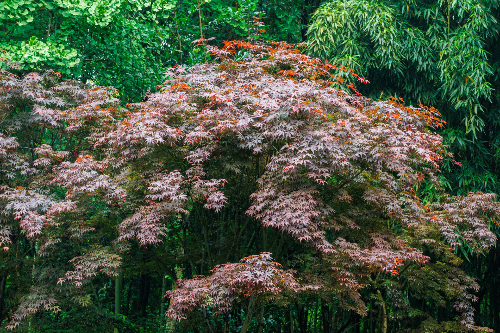

回忆前几天的旅行就仿佛在回忆一场睡了很长的梦一样……
起初是没打算去那么远的地方旅游的，本来打算五一假期在沈阳那些我没去过的地方逛一逛就行，但是后来想了一下可以在平时周末的时候再去沈阳周边我没去过的地方，毕竟离得近，而这个难得的小长假不如去更远一点的地方玩一玩，于是想起来三年前就有去成都的打算了，但是由于种种原因一直拖到了现在，刚好我有几个大学同学在成都，于是最后看了一下机票价格降到了比较合理的水平就决定去四川成都玩了，之后因为成都离重庆很近所以决定先去成都溜达一趟，再去重庆逛一圈。
所以这次的旅行记录就参照四年前咱一个人去上海的旅行那样，把每天的事情简单的回忆一下并记录到这里吧。
4月27日
咱是请了几天年假打算错峰去旅行的，所以旅行是从27号开始，在出发之前沈阳迎来了一次大降温于是发烧感冒了好几天，在看完了沈阳的春天的最后一场雪之后（没错，快到5月份的时候沈阳下了一场雪），拖着生病还没完全康复身子出发去机场坐飞机前往成都……
当时尽管身体因为还在生病没力气，但因为记错了飞机起飞的时间所以那天一大早就一直在忙着收拾行李跑去机场，根本管不上什么身体难受不难受的了……
沈阳到成都的飞机飞了4个多小时，北方的天气也不是很好所以没在飞机上拍什么照片，到成都之后已经是晚上了所以那天一整天都没怎么拍风景的照片。
不过晚上去了同学家拍了一阵子他那一柜子的手办……
4月28日
因为出发前并没做攻略，咱就简单的查了一下成都的几个网红打卡点，于是28号那天坐地铁去了成都的野生大能猫基地。趁着人不是很多，可以比较安静舒服的在大森林里面一边溜达一边给大能猫拍照。
那天成都一整天都在下小雨，然后我感冒没完全好，身体基本上是拿感冒药硬扛的，所以出了很多汗，加上下雨十分潮湿，我的双手得抱着相机所以没打伞，所以在能猫基地逛了一圈后上半身全湿了。


然后是在第一天坐飞机的时候无意间发现我的手机摄像头拍照时照片放大后有几个细微的紫色的斑点，于是傍晚时去了太古里的苹果店约了服务人员帮我检测一下，最终得到的答复是镜头被激光扫到了导致的，尽管我买了AC+但是换镜头需要掏六百多的维修费用，因为相机的紫色斑点不是很严重所以掏六百多块钱维修的话不是很划算，于是回去和同学愉快的恰了一顿烤肉就撤了。
4月29日
五一假期的第一天，和同学去了成都的西部国际博览城，逛了一天的漫展，当时腿都要走断了……
所以这个红石公园有没有红石？MC 玩家狂喜（bushi
最后这张照片，能拍到蒂法和克劳德的组合，感觉这次来成都漫展简直值了。当时在漫展找了一下午的克劳德都没找到他，最后碰到了蒂法后刚想给她拍照时突然遇到了准备回去的克劳德，于是赶紧喊过来和蒂法一起合照，真的当时他们摆出姿势后一下子就回想起了去年夏天玩 FF7 前几章时的感觉了，真的太激动了……
晚上和同学恰了成都的火锅，因为担心会不会狠辣所以要了微辣的锅底，但后来吃起来觉得微辣不够辣，不是十分过瘾……
4月30日
五一假期的第二天依旧是去西博城的漫展，拍了好多coser的照片……
上午办完酒店退租后在写字楼的楼底下拍到了这只独自蹲在角落的小熊。
之后是拖着行李箱去的漫展，在漫展那里找了存包的地方，顺便给举存包牌牌的小姐姐拍了张照。
铃芽户缔
之后是拍到的一些很漂亮的coser……
因为这几天一直在到处溜达走路，所以逛漫展基本上都是走几步就得找个地方坐下休息一会……
晚上坐高铁从成都东站前往重庆，因为到重庆之后是晚上所以有一点点迷路，拿手机导航绕了好几个圈……
到重庆时因为赶上五一的高峰期，旅店的价格很贵，尽管我是提前定的，但还是两百多块钱定了一个很普通（甚至有点破）的房间，还没有独立卫浴……
西南地区尽管还没进入夏天但已经开始湿热起来，不能洗澡是真的要命……
5月1日
因为听说重庆的轨道交通蛮有名的，所以想去看一下比较知名的2号线李子坝站，就是那个把地铁车站修到了楼里的车站。
但实际去了之后，因为人太多了光是从车站下车后下楼就挤了十多分钟，所以体验并不是很好，在马路上抬头看车站实际上也就觉得是地铁（单轨）从楼里穿了过去而已，没啥稀奇的，但毕竟来都来了……
因为人特别多所以我不打算从李子坝站挤回去坐地铁了，而是徒步从李子坝站走到牛角沱站去坐3号线，尽可能的把人流错开。
因为听说重庆的洪崖洞那边人特别多，加上下午实在是太热了，我去旅游的时候光想着会不会冷了所以带的都是厚衣服……一件短袖都没有带。于是在网上找了一下重庆的漫展，前往了重庆的国家会展中心……
果然二刺猿还是应该去二刺猿该去的地方……
傍晚漫展结束的时候，因为实在是太热了浑身出汗都湿透了，已经捂出痱子了，就坐地铁去了附近的瓦达瓜叉找了一家优衣库买了一件短袖换上了。
在万达的麦当劳吃完晚饭后，坐地铁去了重庆的朝天门。

到朝天门穿过商场之后，一直沿着江边的路往洪崖洞方向步行，一开始人还不是很多，但快到千厮门嘉陵江大桥后人就变得特别的多，于是在附近拍了一些照片后决定不去洪崖洞里面，想办法徒步离开这里。
因为听说重庆把跨江大桥封了专门供游客通行，所以我也趁着人不是很多的时候从桥下的江边的路绕（爬山）到了大桥上边。
快登桥的时候人巨多，非常的挤，但所有人都很有秩序，一点点的往前移动。
所以走了几个小时之后终于登上了千厮门嘉陵江大桥，拍了一些照片，但实在是太累了没有掏相机拍照，手机的夜景效果比较勉强。
因为江对面的第一个地铁站人很多，进站要排队，所以咱徒步走到了下一个地铁站，坐9号线回去的。
六十九号线哈哈哈哈哈……
这一天走了相当远的距离，步数达到了2W步，但实际咱的运动量可不只这两万步，从19年到现在很久没走过这么多步了……
5月2日
因为返程的飞机是晚上的，所以白天还可以逛一天，上午在酒店收拾完东西，因为实在是走不动路了，也不想白天顶着大太阳去旅游景点，所以下午又去了重庆的漫展，在漫展基本上都是找地方坐着。
顺便拍了一些照片。
晚上坐飞机前往郑州，在郑州新郑机场过夜……
5月3日
抵达郑州时已经是凌晨1点多了，在郑州机场的候机大厅里只睡了几个小时，因为没有可以躺的地方，所以后来实在困得受不了了就抱着行李箱开睡……
郑州飞沈阳的飞机上咱基本上一直在睡觉，只有空乘在发水和早餐时是醒着的。
在重庆机场候机的时候突然意识到5月3号下午还可以再从沈阳玩半天（确信），于是又买了一张沈阳漫展的票，去找之前认识的人在漫展上给他们拍照……
回去的时候已经困得睁不开眼睛了，叫了出租车睡了一路……
回想一下咱五一假期逛了三个城市，一共五天的漫展，还去了一些其他的旅游景点……
算是报复性旅游吧，其实一开始没打算这么高强度旅行的，但玩着玩着就成了特种兵式旅游了……